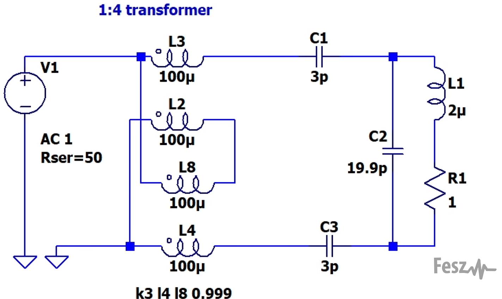
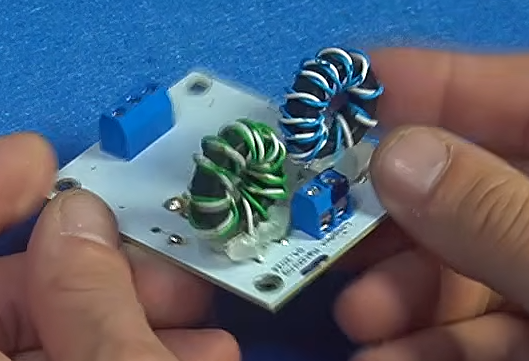

Info: Homebrew 10mm coax loop with butterfly capacitor made from PCB boards.
Conductor: C538 LSZH Tasker 10.3mm outer diameter approx 2 m, PL-259 at the ends. Center conductor not connected.
Capacitor: Butterfly air capacitor made from PCB boards.
Environment: Indoors, about 1.5 m from the walls made from reinforced concrete.
Thanks: Many thanks to Fesz for providing the measurement data and for the countless constructive emails.
| Band | 17m | 15m | 12m | 10m | |
| Frequency f | MHz | 18.102 | 21.062 | 24.904 | 28.079 |
| Intrinsic bandwidth Bint | kHz | 39.1 | 52.7 | 83.6 | 111.1 |
| Source of Bint | S-Parameters | ||||
| Loop diameter D | m | 0.650 | |||
| Conductor diameter d | m | 0.007 | |||
| Loop count n | 1 | 1 | |||
| Inductance L | H | 1.85e-06 | |||
| Capacitance C | pF | 41.7 | 30.8 | 22 | 17.3 |
| Unloaded Q0 | 1 | 463 | 399 | 298 | 253 |
| Damping resistance RT | Ohm | 0.456 | 0.615 | 0.974 | 1.295 |
| Radiation resistance RR | Ohm | 0.0460 | 0.0845 | 0.166 | 0.269 |
| Loss resistance RLoss | Ohm | 0.410 | 0.530 | 0.808 | 1.026 |
| Power to antenna Pfwd | W | 5 | 5 | 5 | 5 |
| swr_min_ant | 1 | 1.35 | 1.07 | 1.06 | 1.06 |
| etaSWR_ant | % | 97.7 | 99.9 | 99.9 | 99.9 |
| Power antenna load Pload | W | 5 | 5 | 5 | 5 |
| Antenna efficiency η | % | 9.85 | 13.7 | 17.0 | 20.7 |
| Loop current I rms | A | 3.27 | 2.85 | 2.27 | 1.96 |
| Loop voltage Uloop rms | V | 691 | 700 | 657 | 643 |
| Magnetic dipole moment m | A m² | 1.086 | 0.946 | 0.752 | 0.652 |
| Link to calculator | calculator | calculator | calculator | calculator | |
Information about the butterfly PCB air capacitor, including 3D models and gerber files: github.com/FeszElectronics/DIY-Variable-Capacitor
Youtube Video: https://youtu.be/tf2oflHAvQ0

| One half of the capacitor | |||
| Plate thickness | dp | 1.6 | mm |
| Clearance | dc | 0.7 | mm |
| Plate spacing | ds = 2 dc + dp | 3 | mm |
| Stator plates | ns | 4 | |
| Rotor plates | nr | 5 | |
Total air gap for both capacitors in series: 1.4 mm.
Rule of thumb for dielectric strength: 3 kVp/mm.
Up = 4.2 kVp.
Urms = Up / √2 = 3.0 kV.
Measured Values:

The antenna is operated at 5W as this is the limit of the transmitter. The limit of the antenna is higher.


Further details are explained in the videos.
The antenna is used indoors, 7th floor, the loop is ~1.5 m from the walls made from reinforced concrete. About 1 m from the ceiling and ~1.5 m from the floor.
The intrinsic bandwidth Bint of the antenna is determined by measuring the S11 parameters and fitting them to an antenna model.
This antenna uses capacitive coupling with a balun, which is a complex arrangement. The simple model assumes an inductive coupling loop and cannot accurately represent this topology.
See also the Smith charts below: red dots are measured values, green line is the model fit.
The VNA was calibrated at the antenna feed point. Despite this, the model returns a relatively high cable attenuation (alpha_db) and a negative cable delay (tau_s) — both of which are artifacts of the balun rather than actual cable effects.
The measured values should therefore be treated with caution.

The calibration of the VNA was done at the antenna feed point: green line.
The cable attenuation alpha and the cable delay tau in the following table should therefore be small.
| File | model f0 MHz |
model Bint kHz |
model alpha db |
model_tau ns |
SWR_min_vna | SWR_min_ant | eta SWR |
|---|---|---|---|---|---|---|---|
| 10m_small_1_H_pcb_VALUES.py | 28.079 | 111.1 | 0.363 | -7.39 | 1.06 | 1.06 | 0.999 |
| 12m_small_2_H_pcb_VALUES.py | 24.904 | 83.6 | 0.373 | -8.47 | 1.05 | 1.06 | 0.999 |
| 15m_small_12_H_pcb_VALUES.py | 21.062 | 52.7 | 0.441 | -10.17 | 1.06 | 1.07 | 0.999 |
| 17m_small_12_L_pcb_VALUES.py | 18.102 | 39.1 | 0.555 | -12.26 | 1.31 | 1.35 | 0.977 |
The following diagrams: red points = measured values; green line = fitted model.
| Smith | SWR | Values | |||||||||||||||||||||
|---|---|---|---|---|---|---|---|---|---|---|---|---|---|---|---|---|---|---|---|---|---|---|---|
10m_small_1_H_pcb |
10m_small_1_H_pcb |
10m_small_1_H_pcb
|
|||||||||||||||||||||
12m_small_2_H_pcb |
12m_small_2_H_pcb |
12m_small_2_H_pcb
|
|||||||||||||||||||||
15m_small_12_H_pcb |
15m_small_12_H_pcb |
15m_small_12_H_pcb
|
|||||||||||||||||||||
17m_small_12_L_pcb |
17m_small_12_L_pcb |
17m_small_12_L_pcb
|
It is a joy to design and build antennas from scratch. It is inspiring when the knowledge gained is shared with the community. Many thanks to Fesz for your contributions.
Overview of all Antennas with filter/selection: compare page
Overview of all Antennas static: static compare page
2026 Peter Märki (HB9ISP). This project is created in my free time and has no commercial background. Provided without warranty of any kind. Feedback is welcome.